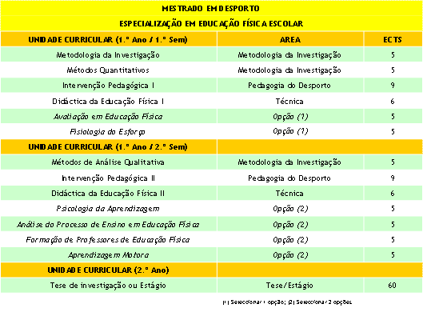

| Ensino > Mestrado em Desporto |

Ano Lectivo 2008/09
Especializações em:
- Condição Física e Saúde
- Desporto de Natureza
- Educação Física Escolar
- Treino Desportivo
Apresentação Geral
O mestrado em Desporto é um curso de natureza profissional, em que a investigação é aplicada no âmbito das especialidades do Treino Desportivo, do Desporto de Natureza, da Educação Física Escolar e da Condição Física e Saúde.Neste sentido, será utilizada uma abordagem com as metodologias de investigação científica da área em estudo, bem como da fundamentação teórica dos principais paradigmas de pesquisa da especialidade. O curso de mestrado será organizado em dois anos lectivos (quatro semestres) correspondendo a um total de 120 ECTS. Nos primeiros dois semestres (60 ECTS), o curso desenvolve-se por via de unidades curriculares, com regime presencial, orientadas para objectivos específicos das áreas de estudo: - Metodologias de Investigação; - Pedagogia do Desporto; - Especialidade (Treino Desportivo; Condição Física e Saúde; Desporto de Natureza; Educação Física Escolar). Os alunos podem escolher qual a especialidade que pretendem realizar, optando então por diversas unidades curriculares disponíveis, desenhando assim o currículo que mais lhes interessa.
No segundo ano (terceiro e quarto semestres) decorre a realização de um Estágio (60 ECTS). Os alunos poderão optar neste ano por realizar uma tese de investigação, caso reúnam as condições exigidas de frequência e avaliação para a produção de uma tese de investigação (a definir pelo conselho científico da escola) ou realizarem um estágio de especialização.
Comissão de Coordenação do Curso
- Coordenadora da Especialização em Condição Física e Saúde – Professora Doutora Rita Santos Rocha (rsantos@esdrm.pt )
- Coordenador da Especialização em Desporto de Natureza - Professor Doutor Luís Carvalhinho (lcarvalhinho@esdrm.pt )
- Coordenador da Especialização em Educação Física Escolar - Professor Doutor Pedro Sequeira (psequeira@esdrm.pt )(Presidente da Comissão de Coordenação do Curso)
- Coordenador da Especialização em Treino Desportivo - Professor Doutor José Rodrigues (jrodrigues@esdrm.pt)
Planos de Estudos

Unidades Curriculares
Ver GUIA INFORMATIVO da Escola Superior de Desporto de Rio Maior (www.esdrm.pt)
Calendário
O curso decorre dentro do calendário escolar da Escola Superior de Desporto de Rio Maior, à sexta-feira e ao sábado (horário variável dependendo das especializações). Os horários de cada especialização poderão ser ajustados às necessidades e expectativas do seu público-alvo. Os horários poderão sofrer alterações significativas em função dos seminários/workshops e da participação de docentes externos, nacionais ou estrangeiros. A respectiva calendarização é definida antes do início do curso.
· 1.º Semestre: 29 de Setembro de 2008 a 24 de Janeiro 2009
· 2.º Semestre: 16 de Fevereiro a 13 de Junho de 2009
· 2.º ano: de Setembro 2009 a Junho 2010
Horários de Funcionamento das Unidades Curriculares das Especializações
Especialização em Condição Física e Saúde
· Sexta-feira das 14:00h às 20:00h
· Sábado das 9:00h às 13:00h
Especialização em Desporto de Natureza
· Sexta-feira das 14:00h às 20:00h
· Sábado das 9:00h às 13:00h
Especialização em Educação Física Escolar
· Sexta-feira das 16:00h às 22:00h
· Sábado das 9:00h às 13:00h
Especialização em Treino
· Sexta-feira das 9:00h às 13:00h e das 14:00h às 16:00h
· Sábado das 9:00h às 13:00h
Os horários da especialização poderão ser ajustados às necessidades e expectativas do seu público-alvo. Os horários poderão sofrer alterações significativas em função dos seminários/workshops e da participação de docentes externos, nacionais ou estrangeiros. A respectiva calendarização é definida antes do início do curso.
Destinatários
Licenciados em Desporto ou áreas afins (preferencialmente).
Condições de Acesso
De acordo com o artigo 17.º do Decreto-Lei n.º 74/2006, de 24 de Março, serão admitidos ao ciclo de estudos do Mestrado em Desporto:
a) Licenciados em Desporto, ou áreas afins, com a classificação mínima de 14 valores;
b) Licenciados com a classificação de licenciatura inferior a 14 valores poderão ser admitidos após avaliação curricular;
c) Titulares de graus por universidades estrangeiras poderão também ser admitidos após avaliação curricular;
d) A comissão de curso poderá, se assim o entender, solicitar provas de selecção para todos os candidatos.
e) Detentores de um currículo escolar, científico ou profissional, que seja reconhecido como atestando capacidade para realização deste ciclo de estudos pelo Conselho Científico sob proposta da Comissão de Curso.
Os mestrandos devem fazer a escolha das Unidades Curriculares de opção no acto da inscrição.
Critérios de Selecção
a) Classificação da licenciatura (45%)
b) Currículo desportivo (15%)
c) Currículo profissional (20%)
d) Currículo científico (15%)
e) Capacidade de compreensão da Língua Inglesa (5%)
Candidaturas e Matrículas
· Candidaturas: 15 de Julho a 14 de Agosto de 2008;
· Publicitação dos resultados das candidaturas: 3 de Setembro de 2008;
· Recepção de reclamações: 3 a 5 de Setembro de 2008;
· Matrículas: 5 a 12 de Setembro de 2008 (suplentes: 15 a 17 de Setembro de 2008).
Documentos necessários para apresentação de candidaturas
· Ficha de candidatura;
· Cópia da certidão de licenciatura;
· Apresentação e cópia do bilhete de identidade;
· Apresentação e cópia da identificação fiscal;
· Curriculum vitae e Ficha resumo;
· Duas fotografias.
Processo de Candidatura
· O candidato deve identificar na ficha de candidatura a especialização em que pretende ingressar, e caso pretenda, uma segunda escolha. Deverá também indicar as unidades curriculares que pretende realizar;
· Taxas de candidatura e matrícula: aplicam-se no mestrado as taxas previstas na tabela de emolumentos do IPS, com as seguintes particularidades: a taxa de candidatura é a prevista para os concursos especiais; no acto da matrícula aplica-se a taxa de utilização, que inclui o seguro escolar;
· Caso exista prova de selecção dos candidatos (de acordo com o artigo 10.º do regulamento específico do Mestrado em Desporto), aplica-se o valor respeitante às provas de pré-requisitos, previsto na tabela de emolumentos do IPS.
Diploma de estudos
O grau de mestre será atribuído, nos termos do artigo 20.º do DL n.º 64/2007 de 24 de Março, aos estudantes que concluam com êxito o Curso de Especialização (60 ECTS) e que realizem o estágio ou uma dissertação (Tese) de âmbito científico. O estágio ou a tese também têm atribuídos 60 ECTS.
Propinas
A propina da parte escolar é de 1.200,00€ por ano lectivo, podendo ser liquidada no acto da matrícula; em duas prestações no acto da matrícula e em Novembro; ou em três prestações iguais de 400,00€, no acto da matrícula, em Novembro e em Abril. Não inclui emolumentos relativos a candidatura, matrícula, emissão de certificados e diploma de estudos.
Em caso de atraso de pagamento de propinas ou não pagamento, aplica-se o exposto no Regulamento Geral de Pagamento de Propinas do IPS.
A anulação de matrícula poderá ser efectuada até 5 dias úteis após a sua realização. A partir dessa data não haverá restituição dos valor pago.
Informações e Contactos
Escola Superior de Desporto de Rio Maior
Serviços Académicos – Dr.ª Marta Ribeiro (martaribeiro@esdrm.pt )
Av. Dr. Mário Soares, Pavilhão Multiusos, 2040-413 Rio Maior
Tel. +351 243 999 280
Fax +351 243 999 295
Regulamento Geral dos Mestrados da ESDRM
Regulamento Específico do Mestrado – Plano de Estudos